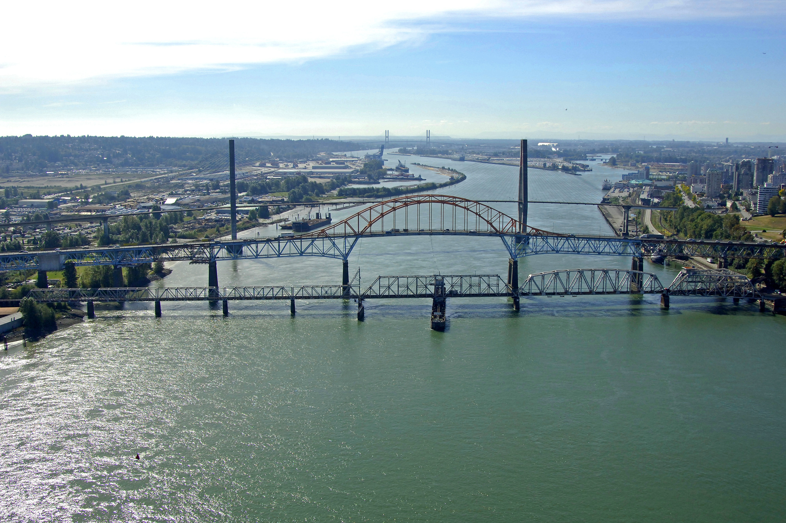
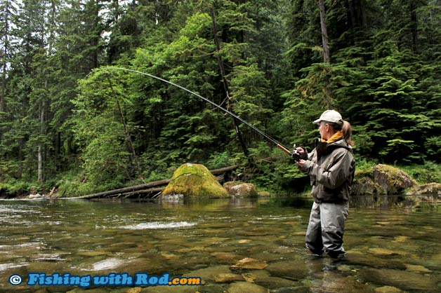

Best Fishing Spots to go near great vancouver
FRASER RIVER
The Fraser River is the longest river within British Columbia, Canada, rising at Fraser Pass near Blackrock Mountain in the Rocky Mountains and flowing for 1,375 kilometres (854 mi), into the Strait of Georgia just south of the City of Vancouver. It is the 11th longest river in Canada. The river's annual discharge at its mouth is 112 cubic kilometres (27 cu mi) or 3,550 cubic metres per second (125,000 cu ft/s), and it discharges 20 million tons of sediment into the ocean.
CAPILANO RIVER
The Capilano River flows from north to south through the Coast Mountains on Vancouver's North Shore between West Vancouver and North Vancouver (district municipality) and empties into Burrard Inlet, opposite Stanley Park. The river is one of three primary sources of drinking water for residents of Greater Vancouver, and flows through the Capilano watershed. The Cleveland Dam, built in 1954, impounds a reservoir for this purpose. The entire area of the reservoir and watershed area upstream of the dam is closed to the public to ensure the quality of the drinking water. Prior to construction of the Cleveland Dam, the Capilano River deposited large amounts of sediment into Burrard Inlet. A dredge was needed to remove this sediment build-up in order to keep Burrard Inlet open for ship traffic. The Capilano has a historic salmon run which was impacted by the dam construction. In 1971 the Capilano Fish hatchery was opened. It was built 1/2 kilometre (km) downstream of the dam to ensure the survival of the run. Beyond strengthening the salmon stocks from the aftermath of the dam, the hatchery’s work also introduced chinook to the system in an attempt to establish a self-sustaining run. The river flows through coastal rainforest and, in its lower stretches, follows a granite canyon with walls in excess of 40 metres tall in places. The Capilano flows during periods of snow melt and rainfall mainly and slows to a trickle at other times. The origin of the name Capilano River is obscure. The name is thought to be an anglicized form of names that were Squamish and Musqueam. The last man known as Chief Capilano died in 1870.
BURNABY LAKE PARK
Burnaby Lake was created by a glacier 12,000 years ago. Traditionally a critically important site for Coast Salish gathering, processing and transportation activities, a century ago its shores were home to bustling sawmills. Today, a viewing tower on that same shore provides a bird's-eye view for spotting wildlife. Or you can view the lake from your canoe or kayak to get an up-close look at busy beavers, diving ducks and turtles feeding in the marsh.